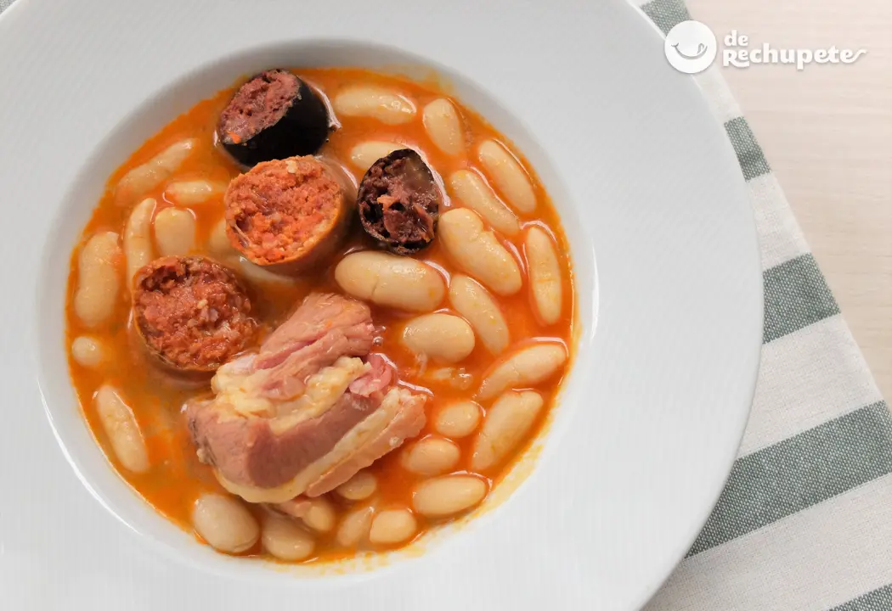
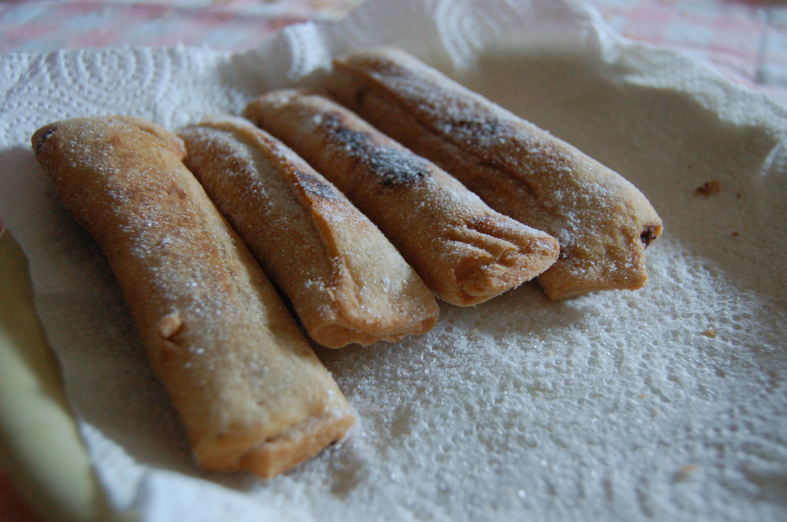

Gastronomía
Fabada
Si pensamos en la gastronomía asturiana, a muchas personas se les vendría a la cabeza este plato. Se trata de un plato que se remonta al siglo XVI. Las primeras alubias llegaron a España procedentes de América encontrando en Asturias un terruño excepcional para su cultivo. Hablamos de la planta denominada Phaseolus Vulgaris del que proceden las judías secas o alubias que en Asturias se denomina faba y que se diferencia de la Vicia Faba del que procede el haba tradicional. Y aunque durante el siglo XVI ya encontramos en Asturias pucheros con fabes todavía falta para que se dé forma a la fabada.
La fabada también precisa de compango que incluye diferentes piezas de carne, sobre todo procedente del cerdo: tocino, lacón, morcilla, chorizo, además de cebolla, ajo y azafrán. Esa es la fabada ortodoxa que encontramos en cualquier restaurante asturiano y esa es la fabada que ya comienza a establecerse en Asturias en el siglo XVIII a tenor de diferentes fuentes que lo certifican.
Cachopo
El cachopo es un plato característico de la gastronomía de Asturias. Consiste en dos filetes de ternera grandes, entre los cuales se coloca jamón serrano y queso. Se come frito y caliente tras ser empanado en harina, huevo y pan rallado y se suele servir con guarnición de patatas, pimientos o incluso champiñones. El término "cachopo" proviene de la semejanza que guardan con los troncos huecos de árbol, llamados igual que este plato.
Las primeras referencias sobre el cachopo asturiano las recoge el doctor Gaspar Casal, a primeros del siglo XVIII. En "El libro de cocina", publicado por la gastrónoma Adela Garrido en 1938, el plato aparece denominado como "filete a la asturiana". Su popularidad se produce en la década de 1950, a raíz de que en 1947 el restaurante Pelayo de Oviedo lo incorpora a su carta. El cachopo era un plato antiguo y de sobra conocido por la burguesía asturiana de comienzos del siglo XX pero su prestigio definitivo no llega hasta finales de los cincuenta o principios de los sesenta.
Frixuelos
Los frixuelos son un tipo de postre. Está hecho a base de harina, leche y huevos. Son típicos de las celebraciones de Antroxu (carnaval) y de las Comadres. También existen los frixuelos vaqueiros típicos de Cangas del Narcea, zona del suroccidente.
Para la preparación en un recipiente se echa la harina, los huevos la sal y el anís, batiéndose todo ello a medida que se va añadiendo poco a poco la leche (o a la inversa, se va añadiendo la harina a la leche hasta que quede el batido ni muy ralo ni tampoco muy espeso), y así sin parar hasta que todos los ingredientes estén bien mezclados y no queden grumos. Conseguido esto, se derrite en una sartén mantequilla, manteca de cerdo o se añade aceite: cuando esté muy caliente se echa un poco de pasta, la justa para que quede una masa amorfa en la superficie de la sartén, y se deja que cuaje y se dore.
En el Occidente Asturiano, la misma masa se fríe en abundante aceite en forma de espiral y tras la fritura se espolvorean con azúcar o miel. Dada la consistencia de los mismos y la forma en que se suelen comer, se pueden rellenar de miel, de nata, o la forma más tradicional, de compota de manzana. En la época de las matanzas se hacen con sangre, la preparación es similar y en algunos lugares les llaman Freixuelas o Fiyuelas.
Casadielles
La casadiella es un dulce típico asturiano. Se trata de una especie de empanadilla frita elaborada con una masa de harina de trigo que se rellena con una mezcla de nueces (y/o avellanas en algunas zonas), azúcar y anís. También se pueden elaborar con masa de hojaldre, haciéndose en el horno. Al servir se espolvorea su superficie de azúcar. Se suele servir como postre.
La receta de la elaboración del relleno difiere un poco dependiendo de la zona de Asturias, hay algunas que incluyen vino blanco, otras anís, unas nueces, otras avellanas, azúcar o miel, etc. La forma final es una especie de canuto o tubería de unos 15 cm de longitud aproximadamente con los extremos cerrados para que no se salga el contenido de su interior, y sellados con un tenedor. Su elaboración es típica de la Navidad, aunque es un postre que se puede encontrar en cualquier época del año y en casi todas las confiterías asturianas.